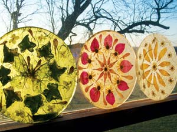

Dried botanicals can be used in innumerable nature-themed crafts, including my favorite - flowered plates and tableware. From spring until autumn, you can gather a dazzling and varied collection of bright flowers, textured herbs, intricate foliage and colorful leaves. This is a simple, yet exquisite, project - suitable to be given as a gift, used in festive table settings or displayed on a wall or shelf.
To dry plants, press these delicate treasures between blotters or tissue paper and carefully store in a phone book or flower press for a few weeks. The other materials are basic and relatively easy to find. You may have to rely on the Internet, however, when ordering the rice paper, of which there is a wide array of colors and textures. (One Internet source is www.papermojo.com.)
Follow these instructions to create your own beautiful botanical plates:
1. Gather up clear glass tableware - plates, bowls, vases or platters - from thrift stores or garage sales. You’ll also need decoupage medium, white glue, scissors and a small brush; all are available at craft stores. Lay out your pressed botanicals on newspapers (and don’t turn on the fan or you’ll be sorry) so that you can easily view the collection.
2. Decide on a design. A simple design is delightful, as is a busy clutter of happy pansies. Turn your glass plate upside down. With a minimal amount of white glue - just enough to hold it in place -attach a flower upside down to the back of the plate. Remember, you will be viewing the finished plate from the other (front) side. The dried flowers are very fragile, so handle them carefully.
3. Once all the materials are glued in place, lay a piece of rice paper, cut a little larger than the plate, over the back of the plate (on top of the upside-down flowers). Holding the paper in place with a finger, carefully apply decoupage medium to the entire surface with easy strokes, always working with a loaded brush. To prevent tearing, try not to brush any areas more than a few times.
4. Let the decoupage medium dry completely - the plate will be practically clear. The rice paper will have, in a sense, “melted” onto the plate; while the color has become a shade lighter, the texture details become more pronounced. Set the plate upside down, letting it sit until completely dry and not tacky. With sharp scissors, or a razor blade, carefully cut or slice the extra paper from the plate’s rim. You may need to glue the edges down again if they have come loose.
If you intend to display your plate, you can now handle it safely. Don’t place it in bright sunlight; the most colorful flowers will quickly fade. If you wish to use the plate as a serving piece (beautiful for serving candies, spreads, strawberries, dips, etc.) then you will need to coat the backing with 10 or more coats of clear-coat polyurethane, or other protective clear sealer. The Earth Pigments Co. (www.earthpigments.com) lists a waterborne acrylic clear coat that is environmentally safe, nontoxic and cleans up with soap and water. The plate may now be hand washed carefully, but not put in the dishwasher.
Have you learned some trick of the trade, secret formula or way to work more sustainably around the homestead??We’ll pay you $25 to $50 for each letter we publish. Send info, with photos please, to “Country Lore” at Mother Earth News; 1503 SW 42nd St.; Topeka, KS 66609, or to letters@MotherEarthNews.com.
|
 BIZ FAIRCHILD REYNOLDS You can collect and dry flowers and leaves to make beautiful botanical plates. |
|
|